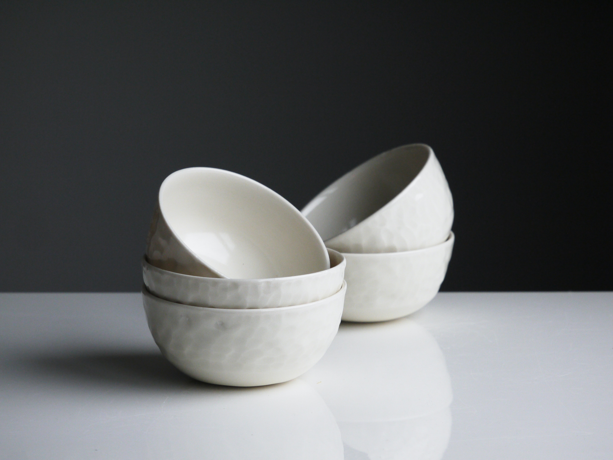

NEUTRALS
Colors that go well with everything

LOVE
You can't make pottery without love.

BALANCE
Balance is the foundation of a good home
Ceramicas by MM began with a first project of a mug for her mother. The family loved the finish and decided to order more and more vessels from her. Today it is a leading company in artisan ceramics throughout Uruguay, with more than 3 branches, shipments throughout the country and the next opening in Buenos Aires, Argentina.
MM was born from the wishes of its creator to make unique, handcrafted and home objects with her own hands. Her passion for interior design crossed physical boundaries to bring it to life.
Colors that go well with everything
You can't make pottery without love.
Balance is the foundation of a good home
Our excellent quality ceramics provide your home with harmony, elegance and love for essentials. We know and specialize in minimalist designs, since many of our clients use them in their offices. We work to see you well and we believe that with little we can create great things.
All social media @cerammics